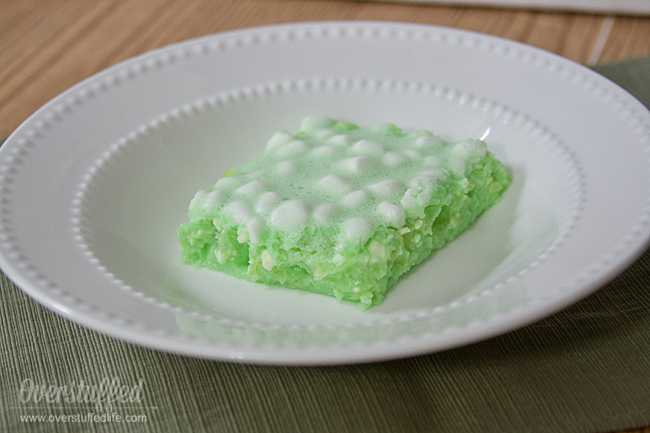

Home
Green Jello Salad

Lime Jello Salad with Cream Cheese and Marshmallows
This Lime Jell-O salad recipe is a holiday favorite at our house. Green jello plus cream cheese, marshmallows, and crushed pineapple combine to make a yummy dessert or side at Thanksgiving or other holiday dinners.
Ingredients
- 1 large box (6 oz) lime Jell-O
- 1 bag (10 oz) mini marshmallows
- 1 block (8 oz) cream cheese
- 1 can (20 oz) crushed pineapple
- 2 cups boiling water
- Optional: Maraschino cherries
Steps
- Pour green jello into medium mixing bowl.
- Add marshmallows. Slice the cream cheese into small chunks (quarter-sized or smaller) and add to marshmallows and jello.
- Add one cup of boiling water, stir thoroughly. The marshmallows and cream cheese should begin to melt.
- Add the second cup of boiling water after about one minute of stirring and continue to stir thoroughly. The cream cheese and marshmallows should be mostly melted, but not completely.
- Stir in crushed pineapple—do not drain, the juice is part of the recipe. Add maraschino cherries if desired.
- our into 9 by 11 pan and place in fridge to set. It usually needs about two hours.
This salad can be made with any flavor jello, but it really is best with green jello. For Christmas I will sometimes use raspberry jello, which is my second favorite flavor for this recipe.
Enjoy!